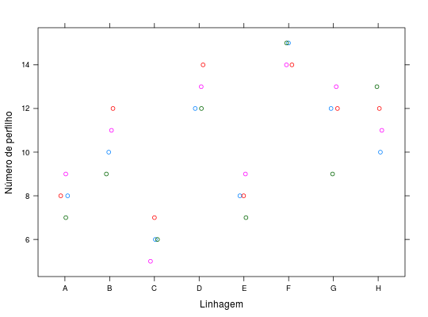

Experimento que estudou o número de perfilhos de plantas de arroz de 8 linhagens em um delineamento de blocos casualizados.
Um data.frame com 32 observações e 3 variáveis, em que
linhblocperfRAMALHO et al. (2005), Execício 4.2, pág. 66.
library(lattice) data(RamalhoEx4.2)#> Warning: data set ‘RamalhoEx4.2’ not foundaggregate(perf ~ linh, data = RamalhoEx4.2, FUN = function(x) { c(mean = mean(x), var = var(x)) })#> linh perf.mean perf.var #> 1 A 8.0000000 0.6666667 #> 2 B 10.5000000 1.6666667 #> 3 C 6.0000000 0.6666667 #> 4 D 12.7500000 0.9166667 #> 5 E 8.0000000 0.6666667 #> 6 F 14.5000000 0.3333333 #> 7 G 11.5000000 3.0000000 #> 8 H 11.5000000 1.6666667xyplot(perf ~ linh, data = RamalhoEx4.2, groups = bloc, jitter.x = TRUE, xlab = "Linhagem", ylab = "Número de perfilho")